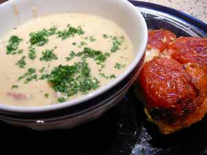

Mom makes more soup
As the tragic events of yesterday began to be reported, both cooking and eating seemed trivial and irrelevant. Although a Pittsburgh girl was wounded in the attack, we didn’t know her or her family, and as far as I am aware, our only connection to the massacre, aside from sheer humanness, is the fact that Leland’s partner, Nathan, graduated from Virginia Tech, so was all too easily able to imagine the scene as it unfolded throughout the day. Along with most other people in the country, if not the world, my thoughts and prayers are with the friends and families who are grieving their losses today.
My husband and son were glued to the evening news programs last night, watching the reports come in, and this is what I gave them to eat:
Creamy Potato and Ham Soup

- 4 tablespoons butter
- 1 medium onion
- 1 stalks celery
- 2 carrots, peeled
- 2 cloves garlic, peeled
- 3 large or 5 small potatoes, peeled
- 2 cups chicken stock
- 1 teaspoon dried dill
- 1 cup half & half
- 1 cup heavy cream
- 2 cups diced or shredded ham
- minced fresh parsley, preferably curly
- salt and pepper to taste
Melt butter in large saucepan. Dice vegetables, beginning with onion and adding to pan as you dice, ending with potato. Sauté until onion is translucent, then add chicken stock and dill to pan. Simmer, partially covered, until vegetables are very soft, about 45 minutes. Either purée half of mixture in food processor or use stick blender (preferred) right in pan to purée partially, leaving some of the vegetables a bit chunky, or to taste. Thin soup with half & half, then stir in heavy cream. If it’s still too thick add a bit of water, then stir in ham and heat. Taste for saltiness before adding salt and pepper. Ladle into bowls and garnish with minced fresh parsley. I like the curly parsley better.
This went well with a roasted tomato tart on the side. A soup like this is the ultimate in comfort food. When I am feeling powerless all I can think of doing is to feed people.
Comments
Tragic events need comfort food like this. I was glad yesterday evening that I had already cooked up a batch of lentils for our dinner, I didn’t feel like cooking at all.
It’s so awful. I can’t even stand to watch the news or read about it right now.
At times like these, I am grateful not to have a t.v., so that I can shield Izzy from these horrors.
Thanks for the comment, Mary. It felt funny not to say anything in the blog and just go back to cooking as usual, so I thought I would just talk about how I felt that day and what I did.
Heath and Izzy’s Mama, we have also turned off the tv; this has now gone from news to sensationalism and I don’t think there’s any more to be gained from watching.
What a perfect comfort food. You know Virginia Tech is where Erica works. Luckily she’s off on Monday’s.
Gosh, no, Sue – I didn’t realize that’s where Erica works. Did she know any of the people involved? She must be shattered by the whole business.
I’m glad to see someone talking about this on a food blog. There seems to be some unwritten rule that events in the outside world never intrude upon the world of food blogs but I feel as if I am prattling on meaninglessly if I write about food as if nothing has happened.
I love your last line.
Add a comment